- …
- …
- Possibility Whyrus- Your next new word: - Coronavacation- There is a LOT of emotional energy trying to complete and shift right now. - If your sense of self-worth comes from giving, doing, making... and you are made to stop... then what worth do you have? - Coming into stillness might overwhelm you with emotions. - Yet your emotions are a tremendously useful inner resource. Right now is a valuable opportunity for using your emotions to heal. No one can do this alone. Through learning to consciously feel you discover the worth of your Being. - We encourage you to reach out to one of the Connection Coaches listed below or find an - online Possibility Team.- Our safe place is each other. - The purpose of this - Possibility Whyrus- Possibilitators- Online Possibility Teams
- Your One-To-One Support Team- Do you need to talk about Coronavirus? - Do you want a safe place to share your fears? Your confusions or doubts? - Do you want help thinking up new possibilities to face into what is happening all around you? - Here are people you can turn to in your most despairing situations without embarrassment. - These are real people who are really there to really help others. - They can support you to take useful actions exactly where you are. - Jennifer Dominguez- Florida, USA / GMT-4- English / Spanish- jenvest44@mac.com- WhatsApp:+1 305 761-7175- Telephone:+1 305 761-7175- Website:- CBC News bio:- https://www.cbsnews.com/video/from-a-dire-diagnosis-to-a-new-mission-in-life/- Instagram:jenniferdominguezhomeopath- Team:You can also join me every- TUESDAY18:30-20:30 in GMT-4 for our- Online Possibility Team- Platform:Please see our listing at- http://possibilityteam.mystrikingly.com/#online-pteams - Habet Ogbamichael-Kupfer- Berlin, Germany / GMT+2- English / Deutsch /- Tigrinya- habet_o@hotmail.com- WhatsApp:+49 15734631648- Telephone:+49 15734631648- Facebook:- https://www.facebook.com/habeto- Team:- People can also connect with me on - FRIDAYS12:00-14:00 during our- Online Possibility Team- Platform:Please see listing at- http://possibilityteam.mystrikingly.com/#online-pteams
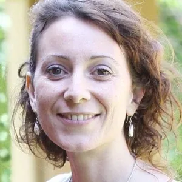
- Sara Parisi- Italia / GMT +2- Italiano / English- info@saraparisi.it- sarababe@libero.it- WhatsApp:+39 3403693178- Telephone:+39 3403693178- Website:- Instagram:spaziosacro- FaceBook:- https://www.facebook.com/spaziosacro/- Online coaching and training (PLEASE WRITE AND ASK FOR APPOINTMENT). - Team:I OFFER FOR FREE in this emergency: Online Feeling Work Group- SUNDAYS11:00-13:00 GMT +1. Please write to me for connection link.- Platform:Please write to me for connection link.- Team:Online Feeling Work Group for children/teenager- FRIDAYS17:00-18:00 GMT +1.- Platform:Please write to me for connection link.- Please see the listings at - http://possibilityteam.mystrikingly.com/#online-pteams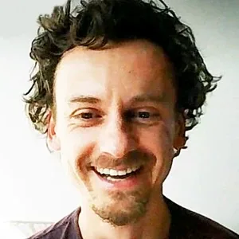
- Maciek Antkowiak- Warsaw, Poland / GMT+2- Polish / English- maciek@maciekantkowiak.pl- WhatsApp:+48 791742387- https://www.facebook.com/machikantkowiak- Website:- Available for single, couple, and group coaching. - I am Clarity Courage Empowerment Possibility and Connectedness - I offer a free emergency session (20-30min) and free sessions for medical and support staff. - Team:We have a Polish speaking- Online Possibility Team- THURSDAY- S18:00-21:00 (Warsaw Time GMT+1).- Platform:Please see our listing at- http://possibilityteam.mystrikingly.com/#online-pteams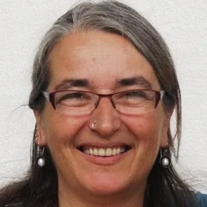
- Anette Schuster- Germany / GMT+2- Deutsch / English- anette@lebefreude.net- Telephone:USA +1 206 854 7190- Telephone:DE +49 1577 298 4621- Facebook:- https://www.facebook.com/AnetteBrigitteSchuster- I offer emergency sessions for free..... around 15 to 20 minutes on FB supporting you to deal with your fears and also with your anger.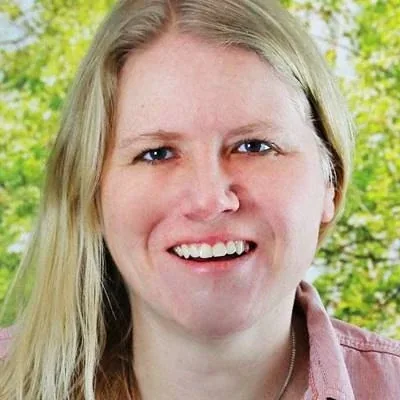
- Lisa Kuchenmeister- Germany / GMT+2- Deutsch / English- lisa@lebeleichtigkeit.de- WhatsApp:+49 151 68455565- Telephone:+49 151 68455565- Website:- Gerne kannst du mit mir einen Video-Call oder ein Telefon-Coaching vereinbaren. - Facebook:- https://www.facebook.com/lisakuchenmeister.lebeleichtigkeit- Team:- Jeden - Dienstag/TUESDAYStreffen wir uns von 19.00-21.30 Uhr for- Online Possibility Team- Platform:On Google Meet. Every second week we are open for new people to join. Dabei sind wir jede zweite Woche offen für neue Leute. Please write for a connection link.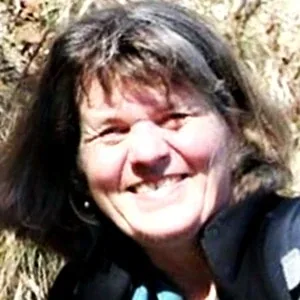
- Kathrine Düser- Sinzing, Germany / GMT+2- English / Deutsch / French / Italian- kathrin.dueser@gmx.de- WhatsApp:+49 160 7131631- Telephone:+49 9404 9536636- Facebook:- https://www.facebook.com/ alice.dorothea.71- Announcements also in the Facebook - Possibility Management Group- Websites:- http://www.nextculture.de- Team:- Online Possibility Team- SUNDAYS15:00-18:00- Platform: Zoom - https://us04web.zoom.us/j/- 3481398713- New people welcome. Please write to join our Facebook Messenger Group. - Dean Spillane-Walker- Seattle WA USA / GMT-7- English- safecircle@gmail.com- WhatsApp:+1-541-499-2768- Telephone:+1-541-499-2768- Website:- Team:On- TUESDAYSwe have a Safe Circle Zoom call from- Platform:- Please write for my Zoom link. - Safe Circle is similar to - Online Possibility Team- https://livingresilience.net/safecircle/.We also come together in- Deep Academy- Poetry of Predicamentpodcasts (- YouTube channel - Michelle Manjarrez- Mexico City, Mexico / GMT-5- Spanish / English- michellemanjarrez@gmail.com- WhatsApp:+1-305-458-5284- Website:- lifetriberetreats.comPossibility Mediator and Biological Medicine Bridgebuilder.Offering Possibilities in Spanish and English collaborating with doctors specializing in biological medicine and other integrative health practitioners.Also offer safe bridge-making sessions with MD collaborators on questions regarding topics such as: Prevention and treatment, Ozone Therapy, High Dose Vitamin C IV, Glutathione IV, Essential Oils, Alkaline Diet, Supplements, Energy Medicine and more...- Team:- Online Possibility Team- Platform:Please see our listing at- http://possibilityteam.mystrikingly.com/#online-pteams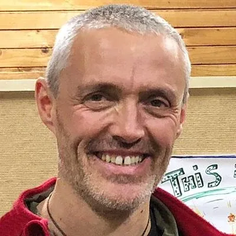
- Michael Hallinger- Munich, Germany / GMT+2- Deutsch / English- michael@aufbruch-trainings.de- WhatsApp:+49 157 531 28 365- Websites:- Facebook:- Team: WEDNESDAYS10:00-12:30- Platform:Please see our listing at- http://possibilityteam.mystrikingly.com/#online-pteams - Cornelius Butz- Frankfurt, Germany / GMT+2- Deutsch / English- info@corneliusbutz.de- Telefon/ WhatsApp/ Signal/ Telegram:+49 176 3250 5382- Website:- Skype:cebutzI am a Possibility Management Trainer. I do- Possibility CoachingPlease connect with me for my Relationship- / Finance- / Bankruptcy-Hotline.Beziehungs- / Finanzen- / Insolvenz-Hotline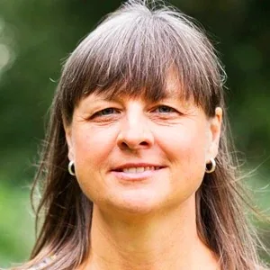
- Dagmar Thurnagel- Munich, Germany / GMT+2- Deutsch / English- dagmar@aufbruch-trainings.de- WhatsApp:+49 1573 2112515- Telephone:+49 1573 2112515- FaceBook:- https://www.facebook.com/dagmar.thuernagel.5- Websites:- Team:- WEDNESDAYS10:00-12:30- Platform:Please see our listing at- http://possibilityteam.mystrikingly.com/#online-pteams - Patricio Diaz Canas- New York, USA / GMT-4- Spanish / English- patriciodzcns@gmail.com- WhatsApp:+1 646 479 3998- Telephone:+1 646 479 3998- FaceBook:- https://www.facebook.com/patricio.diazcanas- Website:- http://gestiondelaposibilidad.org- Team:I am putting together an online possibility team-like event that I want to call "- Practicing Connection While Physically Distant" it will be on my- website- Possibility Team- Platform:Please write me to receive a connection link. - Susanne Hutzler- Ravensburg, Germany / GMT+2- Deutsch / English- susanne.hutzler@gmail.com- WhatsApp:+49 160 90966553- Telegraph:+49 160 90966553- Telephone:+49 160 90966553- FaceBook:- https://www.facebook.com/susanne.hutzler.3- Website:Was ist/ what is "Feelings Practitioner?"- http://feelingspractitioner.com- Platform:When your body creates symptoms you can take it as a call for action to relate to your body in a new way: I offer feelings practitioner sessions, online, via Zoom videocall. Please write to me for a connection link. Wenn Dein Körper Symptome entwickelt und Du herausfinden willst, wie Du auf neue Weise damit umgehen kannst: dafür biete ich Dir feelings practitioner sessions an, online, als Videoanruf über Zoom.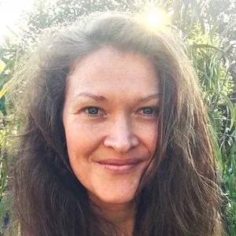
- Therese de Wolf- Perth, Australia / GMT+8- English- dewolf.therese@gmail.com- WhatsApp:+61 403 005 577- Website:- FaceBook:In light of the current global situation, I’m offering 30 to 60 minute sessions to support people in this time of great change.Once the session is complete I will ask you to contribute whatever the session was worth to you as a self responsibility exercise.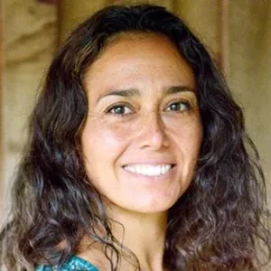
- Ana Norambuena- New Zealand / GMT+12- Español / Deutsch / English- ananinaloop@gmx.de- WhatsApp:+64 2040877083- Telephone:+64 2040877083- Skype:onlineberatungspraxis- Facebook:- https://www.facebook.com/ana.norambuena- Websites:- Team: WEDNESDAYS08:00-10:30 (morning) New Zealand Time GMT+13.- Online Possibility Team- Platform:Please see our listing at- http://possibilityteam.mystrikingly.com/#online-pteams - Anne-Chloé Destremau- Ravensburg, Germany / GMT+2- English / French- annechloe.destremau@gmail.com- WhatsApp:+62 85971612991- Signal:+62 85971612991- Telegram:+62 85971612991- Website:- http://annechloedestremau.orgI offer free 15-20 min session to deal with your fear, confusion, frustration, anger, or sadness.I am available for Zoom/Skype/Phone single and couple coaching and Possibility Mediation.I am available for support for Trainers, Coaches, and Facilitators who hold space for others.- Platform:Please write to me for a connection link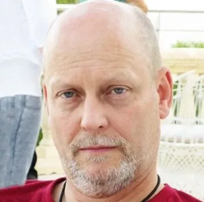
- Georg Pollitt- Zurich, Switzerland / GMT+2- Deutsch / English- georg@harbigarr.ch- WhatsApp:+49 1573 198 1228- Telegram:+49 1573 198 1228- Phone:+49 1573 198 1228- Phone within Switz:078 892 82 01- Skype:georgpollitt- Websites:- www.harbigarr.ch- www.harbigarr.org- Facebook:- https://www.facebook.com/georgpollitt Online Coaching and Training for more Love, Clarity, and Possibility in your life.- Online Possibility Team- THURSDAYS19:30-21:00- Platform:To join please get into contact beforehand.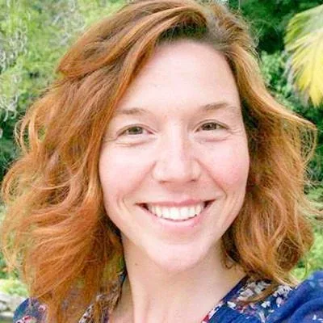
- Vera Franco- Scotland / GMT+1- English / Portuguese / Spanish- veralfranco@gmail.com- WhatsApp:+44 7748934374- Telegram:+44 7748934374- FaceBook:- https://www.facebook.com/veraluisafranco- Websites:- verafranco.org- pmuk.mystrikingly.com (archived — not captured)- pmpt.mystrikingly.com- Online Possibility Coaching sessions to bring more Love, Clarity and Possibility in your Life. I offer free sessions to support you with your stress, anxiety, fear, confusion, frustration and sadness for 20-30 minutes. - Platform:Please write to me to get an online link.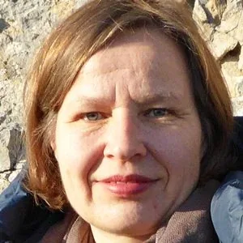
- Jördis Tielsch- Basel, Switzerland / GMT+2- Deutsch / English- jtielsch@gmx.ch- WhatsApp:+41 79 3094756- Telegram:+41 79 3094756I’m also available for single coaching.- Online Possibility Team- THURSDAYS19:45-21.00- Platform:To join please get into contact beforehand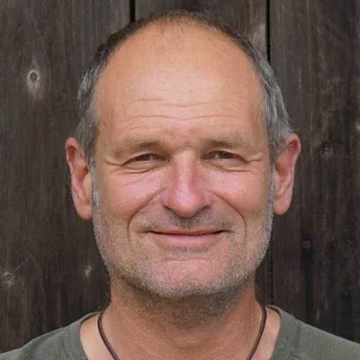
- Arthur Dorsch- Munich, Germany / GMT+2- Deutsch / English- mail@innernature.de- Telephone:+49 9974 903406- Websites:- Inner Nature – Wegweisende Naturerfahrungen, NaturCoaching - Debby Sugarman- Washington D.C., USA / GMT-4- English- debby@debbysugarman.org- WhatsApp:+1-716-479-1490- Telephone:+1-716-479-1490- FaceBook:- https://www.facebook.com/debby.sugarman- Website:- www.debbysugarman.org- I offer individual coaching, mediation, communication skill-building. - Please write to me to start a conversation. - Thora (Martina) Unger- Munich, Germany / GMT+2- Deutsch / English- welcome@martinaunger.com- WhatsApp:+49-16096819376- Telephone:+49-16096819376- Skype:martina unger- FaceBook:- https://www.facebook.com/martina.unger1- Website:- My Service: Online-Coaching per Zoom or Skype or Telephone. - Team:- Online Possibility Team- https://www.kopfstand-coaching.net/termine/- Team:We don't have regular days for our Online Possibility Teams. If you click on the link- https://www.kopfstand-coaching.net/termine/- welcome@martinaunger.com- k.strese@kopfstand-coaching.net - Jennifer Emmrich- Berlin, Germany / GMT+2- Deutsch- team@nextculturecoaching.de- FaceBook:- https://www.facebook.com/jenny.emmerich.1- We have an - Online Possibility Team- WEDNESDAYstarting 25 March 2020 at 21:00-23:00.- Please write for connection info. - I offer teams and coaching online (and workshops such as rage work during corona-time.) - Stacia Beazley- Melbourne, Australia / GMT+10- English- stacia@theartofrelating.com.au- Telephone:+61 407 412 691- Website:I publish my articles here:- Facebook:I offer basics around feelings so you have possibilities to access your human navigation tools.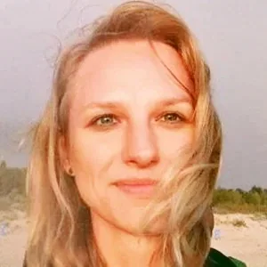
- Emilia Slimko- Warsaw, Poland / GMT+2- Polish / English- emiliaslimko@gmail.com- WhatsApp:+48 601284099- Facebook:- https://www.facebook.com/imagostrefawzrostu/- Available for single coaching. - Team:Polish speaking- Online Possibility Team- THURSDAY18:00-21:00 in Warsaw Time GMT+1.- Platform:Please see our listing at- http://possibilityteam.mystrikingly.com/#online-pteams - Joana Ribeiro- Rio de Janeiro, Brazil / GMT-3- Portuguese / English- jmatiasribeiro@gmail.com- WhatsApp:+351 916 475 503- FaceBook:- Websites:- Team:Portuguese speaking- Online Possibility Team- SUNDAYS18:30-20:30 in Rio de Janeiro Time GMT-3.- Platform:Please see our listing at- http://possibilityteam.mystrikingly.com/#online-pteams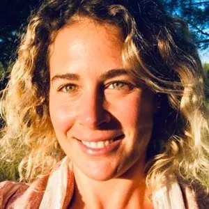
- Joana Cruz- Portugal / GMT+1- Portuguese / English / Spanish- joanadebritocruz@gmail.com- WhatsApp:+351 919759516- Team:Our- Online Possibility Team- WEDNESDAYS17:30-19:30.- Platform:Please see our listing at- http://possibilityteam.mystrikingly.com/#online-pteams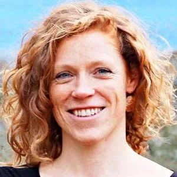
- Friederike von Aderkas- Bad Belzig, Germany / GMT+2- Deutsch / English- friederike.aderkas@posteo.de- WhatsApp:- Website:- www.friederikevonaderkas.com- Facebook:- www.facebook.de/rike.ader- Skype:Friederike von Aderkas- Zoom:- https://us04web.zoom.us/j/2020609937- Ich biete dir an dich zu unterstützen deine Gefühle zu sortieren. Wut, Angst, Traurigkeit und Freude, bezug auf die aktuelle Situation - wenn dich diese Gefühle bzw. auch alte Emotionen momentan beschweren, lass sie uns gemeinsam in Bewegung bringen, so dass sie dir als Navigationssystem in deinen Alltagbeziehungen dienen und du sie für dich nutzen kannst. - Skype oder Zoom Session: 20-40min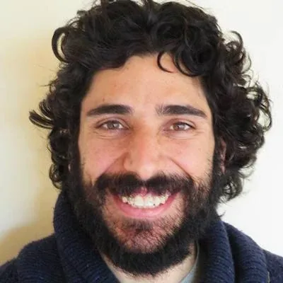
- Yorgos Athanasiadis- Lagos, Portugal / GMT+1- Greek/English/Portuguese/Spanish/Catalan- yorgoathis@gmail.com- WhatsApp:+351 920 131 109- Telephone:+351 920 131 109- Website:- http://yorgosaenaos.mystrikingly.com/ (archived — not captured)- I am an evolution whisperer, explorer, and Possibility Management Trainer at your service. - Marcin Szot- Warsaw, Poland / GMT+2- Polish / English- m.shot@wp.pl- Telegram:+48 693 261 588- Skype:marcin.szot1- FaceBook:I hold space for single coachings.- 3-3-3 Process:On- WEDNESDAYSand- FRIDAYSat 09:30 Polish time, I hold space for online- 3-3-3 Processes- Team:- Online Possibility Team- THURSDAYS18.00 - 21.00 Polish time, GMT+1.- Platform:Please write to me for a link. Please see our listing at- http://possibilityteam.mystrikingly.com/#online-pteams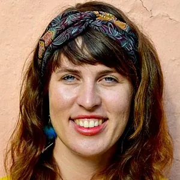
- Christine Ploschenz- Berlin, Germany / GMT+2- Deutsch / English- klara.koerper@posteo.de- WhatsApp:+49 15119488242- Telephone:+49 15119488242- Website:- https://www.klarakoerper.com/ Instagram:- https://www.instagram.com/klara_koerper/- I offer physical tools for grounding and dealing with fear, and a kind ear for receiving and giving. - Facebook:- https://www.facebook.com/christineploschenz- Platform:Zoom. Please write me to get a connection link. - Odjo Strese- Munich, Germany / GMT+2- German- k.strese@kopfstand-coaching.net- WhatsApp:+49-1522-8998336- Telephone:+49-1522-8998336- Skype:klaus strese- FaceBook:- https://www.facebook.com/klaus.strese- Website:- My Service: Online-Coaching per Zoom or Skype or Telephone. - Team:- Online Possibility Team- Platform:You will find dates and times for the PTeams and can register on the calendar here- https://www.kopfstand-coaching.net/termine/- then you will receive the Zoom link.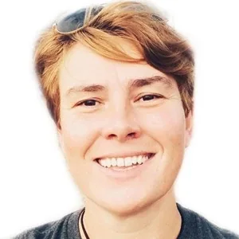
- Mack Price- Lisbon, Portugal / GMT+1- English/Dutch/Flemish/French- mack.price@outlook.com- WhatsApp:+351 927869078- Telephone:+351 927869078- FaceBook:- https://www.facebook.com/mackpricemobile- Instagram:- https://www.instagram.com/pricemobile- Website:- https://www.facebook.com/LET.LeadingEdgeTeam I offer free 15-30 minute video calls for emotional and self-awareness support during the self-isolation times (outside of my office hours).- Team:Every two weeks (starting 3 April 2020) the Leading Edge Team (LET) meets per Zoom on- FRIDAYevenings 20:00-23:00 (open to anyone interested) to consciously co-create in a fun playful way on a variety of topics. The Zoom meeting opens for log-in at 19:45.- Platform:Please text me to reach out. - Manouk Fiechter- Switzerland / GMT+2- Schweizerdeutsch- / English / French- manoukfiechter@yahoo.comAvailable for single, couple, parents coaching and community support.I offer you telephone-coachings in accommodating your feelings, looking deep inside of yourself and listening to what wants to be heard. I aim to empower you to stay smooth and flexible when possible and stand your ground when needed. - Maya Sarah Meirav- Israel / GMT+3- Hebrew / English- maya.meirav@gmail.com- Telephone:+ 972 553 14 53- Facebook:- https://www.facebook.com/maya.s.meirav I am here to listen, reflect and assist in creating a lucid inner space for you.- I help you tune into the life force of your feelings. - My goal is to bring you back to self-love so you can embody your higher self. - I am giving initiations for energetic tools and light teachings.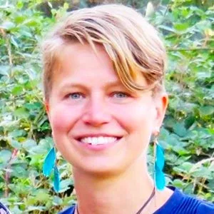
- Julia Neumann- New Zealand / GMT+12- Deutsch/English/Italian/French- julianeumann@outlook.com- WhatsApp:+49 1785335009- FaceBook:@lifeisnow.one, and, julia.neumann.1- Website:- Online Possibility Team? - Gabriella Heller- Switzerland / GMT+2- French / English- gheller.curandera@gmail.com- Telephone:+41 78 672 34 62- Websites:- FaceBook: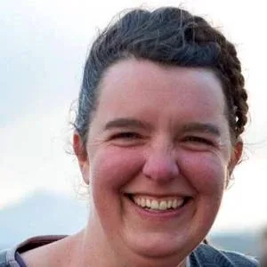
- Kiri Bear- Melbourne, Australia / GMT+10- English- kiri.bear@gmail.com- FaceBook: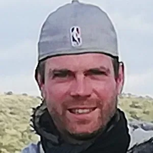
- Luc-Eduoard Brugger- Switzerland / GMT+2- French- luc-edouard@outlook.com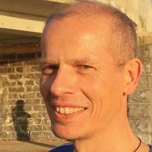
- Andreas Beutler- Göttingen, Germany / GMT+2- Deutsch / English / Svenska- andreas@andreasbeutler.de- Skype:andreas.beutler2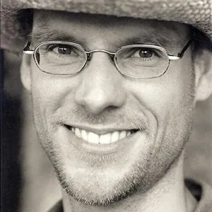
- Gunnar Bäsmann- Honsfeld, Belgium / GMT +2- Deutsch / English / French- mail@ganzes-leben.de- Website: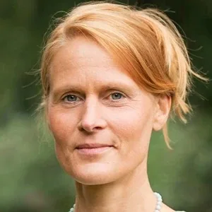
- Michaela Kaiser- Bielefeld, Germany/ GMT+2- Deutsch / English- info@michaelakaiser.de- Skype:naturela 358 - Christine Neubauer-Dorsch- Munich, Germany / GMT+2- Deutsch / English- info@theater-vivalavida.de- Website: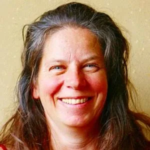
- Judith Kaiser- Honsfeld, Belgium / GMT +2- deutsch / English / French- mail@ganzes-leben.de- Website: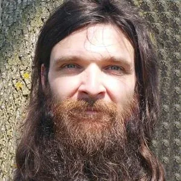
- Fabian Gewohn- Switzerland / GMT+2- Deutsch / English- veedelastro@mail.de- WhatsApp:+49 1514 6228444- Telegram:+49 1514 6228444- Skype:wiseversa- Wire:alwarbuteo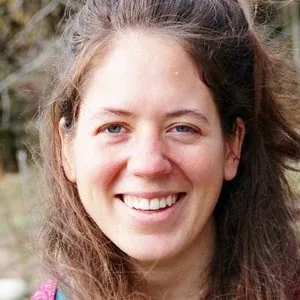
- Selina Fehr- Switzerland / GMT+2- Deutsch / English- selina.fehr@mailbox.org- Telephone:+41 79 778 27 09- Telegram:+41 79 778 27 09- Website:- http://selinafehr.chPlease write to me to set up a Zoom or Telegram call. - Tanja Gerold- Germany / GMT+2- Deutsch / English- tanja.gerold@gmx.de- WhatsApp:- Website:- www.koment.org- FaceBook:- https://www.facebook.com/tanja.gerold.9 Note: I made it back to Germany. - Online Possibility Teams- Almost every time of day, almost every day of the week, somewhere around the world, - there is an - Online Possibility TeamA Possibility Team is a group of strangers who come together once a week for a couple of hours and - through helping each other learn from, and grow out of, painful situations - become true friends.Creating or participating in a weekly Possibility Team has long been a source of nurturing support for the adulthood healing and initiatory processes of Possibility Management. With the increasing necessity to physically isolate, this does not block your opportunity to get that support for yourself and your friends.On the Possibility Team website we have built a new page that lists all of the Online Possibility Teams we know about. They are listed according to GMT time zones, and give languages spoken, times, day of the week, and connection information.Your weekly Online Possibility Team could become a highlight of your week, providing you with high doses of life energy, clear insights, and authentic companionship. Don't miss it. Please reach out and connect in.The list of Online Possibility Teams is here:- http://possibilityteam.mystrikingly.com/#online-pteamsFor a list of Physical Possibility Teams that we know of, please go to the Possibility Management main website- HERE
- Your Thoughtware May Be Holding You Prisoner- Harry&Samantha - "Is-Glue" Paint Brush(Matrix Point: YOUTUBEx.05 for- StartOver.xyz- Samantha: - 'I am stuck here' ' I. Am. Stuck. Here' Harry:- 'I don't understand how you can take responsibility for circumstances.'- Are you believing your own stories? Do you believe that you have no choices while facing circumstances?- If so, you might want to check this video out.
- What To Do Now?- Being inventive as a your basic strategy. Improvise... ask yourself: - I think I need it... My - Boxfeels like it needs it... but do I really need it? What do 'I' really need?- How would nature do this? - What could be an alternative to this? - It is not a fantasy world to imagine that things in the modern world could collapse. - One part of you may be happy to see that you were not an idiot to think that for all these years. - Another part of you is scared. - Be available for those who want to connect with you. - That you found this resource before others mean you probably have some way to support them. - By letting others connect with you, you are connected.
 - 3-3-3 PRACTICE- EXPERIMENT PWHYRUSx.01- Go to - http://3-3-3.mystrikingly.com- You will be so happy you did this, especially if you do 3-3-3 for the full 3 months. Your whole nervous system will gain resilience and fortitude. It feels so fantastic to show up more present and more completely in your life. - You can also do 3-3-3 online around the world as a Team. Why not? Start NOW and that is this same Experiment.
- 3-3-3 PRACTICE- EXPERIMENT PWHYRUSx.01- Go to - http://3-3-3.mystrikingly.com- You will be so happy you did this, especially if you do 3-3-3 for the full 3 months. Your whole nervous system will gain resilience and fortitude. It feels so fantastic to show up more present and more completely in your life. - You can also do 3-3-3 online around the world as a Team. Why not? Start NOW and that is this same Experiment. 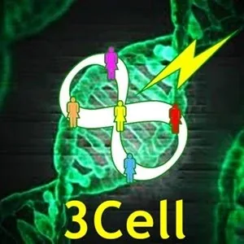
- MAKE YOUR 3CELL- EXPERIMENT PWHYRUSx.02- Go to - http://3cell.xyz- The purpose of your 3Cell is to support each other's Evolution. - You begin with a Team of 3 to make the first Circle of your 3Cell. - But each 3Cell has 2 Circles of 3! - You are the connector between both Circles of 3. - Why 2 Circles? - Because then you always have a backup. No matter what happens there will be someone available to turn the lights of awareness on so everyone can see what is lurking in the Shadows. - This is the - Pirate Agreement (archived — not captured)- Present- To Connect. To Commit. To Consciously-Change. - You just created a home of like-minded friends to support each other's evolution during these extraordinary times. - If you show others how to do this, the (r)evolution takes off! - BE IN QUARANTINE- EXPERIMENT PWHYRUSx.03- So many of us are in a more-or-less locked-in situation right now. This is an uncomfortable but precious chance to find out a lot about ourselves... - Arrange to be with a friend or two, or bring this - EXPERIMENTto your- Online Possibility Team- PART 1:You are staying at home. You are bored with the internet so you have turned it off. Here you are. What is really going on with you? (Each person Check-In out loud with everyone for a few minutes.) For example, what goes on with your 4 bodies? With your Center? With your Gremlin? What feelings are you having? What emotions are you having?- PART 2:During PART 2- give no feedback or coaching to each other at this time!Take 10 minutes where each person writes out responses to the following questions in their- Beep! Book- How do you keep your Numbness Bar up so high? - How do you keep yourself busy (e.g. feeding your Gremlin, distracting yourself, doing things that are to be done)?
- What do you do when you run out of things to keep you busy?
- What is most important for 'you'? (Answer this question for 3 different 'you's. Specifically, what is important for your BeingBoxyour Gremlin
- What traumas are being triggered now that make you so Reactive
- After the silent writing time, each person share what you have written. - PART 3:This is a time for deep, deep listening from everyone. Go deeper into the space you have created together with these questions:- Can you allow these waves of introspection to go deeper-and-deeper, to reveal more-and-more about what is really going on inside of yourself? (Sharing from anyone?)
- How can you make space for everybody's big feelings and emotions in such a little group of people where you are staying? (Sharing from anyone?)
- Maybe you have sadness about never being seen by someone else in your life... but probably the greatest sadness is about that you have never even truly seen yourself. (Sharing from anyone?)
- The habit of looking at yourself from the outside may have perfected your avoidance of looking at yourself on the inside. (Sharing from anyone?)
- After this being-together-time and sharing-time, take a few moments of silence gazing in each other's eyes to feel the trust, the deep connection and collaboration to make this safe space. Make plans for your next meeting or - Online Possibility Team - MAKE A BOUNDARY - S.P.A.R.K. 079- EXPERIMENT PWHYRUSx.04- From - S.P.A.R.K. 079- Without boundaries, children go crazy. They have nothing to grab onto and they start wildly flinging about trying to find the shape of their reality. If you have difficulty with your children it is probably this: they are frantically testing their environment to find its limits so they have something solid to hold onto. You have not provided it for them. - This Experiment is to make... stand in... hold... and personally become... one boundary with your child, partner, boss, neighbor, or friend... NOW. Write your boundary clearly and simply into your - Beep! Book- I JUST MADE THIS BOUNDARY. Then tell someone else in Your Circle what boundary you made, how it felt to make the boundary, and what has changed for you. You might feel something as you share this. Feelings are half of every communication.
 - ASK YOUR FRIENDS NONLINEAR QUESTIONS AT YOUR ONLINE 'QUESTIONS CLUB'- EXPERIMENT PWHYRUSx.06- Asking nonlinear, unpredictable, original questions is one of your - 3 Powers- Asking- http://zoom.us- Your Circle- How to 'really' connect when we cannot touch?
- ASK YOUR FRIENDS NONLINEAR QUESTIONS AT YOUR ONLINE 'QUESTIONS CLUB'- EXPERIMENT PWHYRUSx.06- Asking nonlinear, unpredictable, original questions is one of your - 3 Powers- Asking- http://zoom.us- Your Circle- How to 'really' connect when we cannot touch? - How can I manage the 'longing' for deep connection?
- How to deal with anger (domestic violence increases when families come together for a longer period of time)?
- How to navigate and make use of my huge unreasonable fears?
- How to stay present and not freak out (24/7 kids at home)?
- What is boredom and how to navigate it?
- How can I still feel attracted in my relationship if we see each other every day and the whole day?
- What the fuck is the meaning of this virus? Why now?
At the end of each online meeting, each person has selected their favorite most-motivating question, and checks out ananouncing what they are going to do about it.
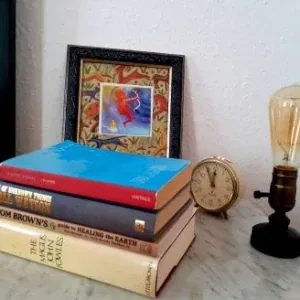
- FINISH UNREAD- BOOKSWITH YOUR 'ONLINE BOOK CLUB'- EXPERIMENT PWHYRUSx.07- How many unfinished books are on your bed side table waiting for you to read them? - Some books - including the ones listed - here- matrix building- Don't want to read alone? Make a - Online Book Club. Choose a book. Fix a date and time (for example, 1.5 hours of reading, twice a week) and read out loud the book to each other for 1 hour. For the remaining 30 minutes, share your considerations, questions, ideas popping up from reading the book together. - CREATE LOVING 'TO DO' LISTS FOR EACH OTHER ONCE PER DAY- EXPERIMENT PWHYRUSx.08- Now is the time to make it possible for your friends or partners to take care of themselves, to go out of their was to do good things for themselves that they would not normally do. - Make a Pirate Agreement to once a day make a 'To Do List' for each other. It is called - To Do 4 You!- Sit down and on a notepad write out 2 or 3 things for your partner to do today that are extraordinary and wonderful for - them.- Here are a few ideas: - Take an hour-long hot bath with oils, herbs, and salts in the bathwater, and Beethoven playing in the candle light. - Do 50 Jumping Jacks.
- Bake the Browniesrecipe
- Call your college roommate and apologize for stealing their boyfriend.
- Pull the weeds in the sunshine and absorb all the high-energy positive sun vibrations and natural Vitamin D.
- Practice playing drums, piano, saxophone, banjo, harmonica, together in a jam session.
- Sing Christmas Songs, 1960s folk songs, Neil Diamond songs out loud together for an hour with cups of steaming hot spiced apple juice.
- Ask me to sit with you while you clean out your closet of extra stuff, practicing using your Sword of Clarity
- Etc. You get the idea.
Sometimes these are things to do alone. Sometimes they are things to do together. Each time they are something that benefits the person doing them in a way that they might not ordinarily take care of themselves.
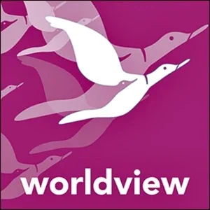
- TAKE AN ONLINE COURSE- EXPERIMENT PWHYRUSx.09- Expand Your Brain! - You have the free time and space to explore now. - The courses listed below are free or cheap. - In each of these courses you learn so much and connect with such great people around the world. These are people who want to learn what you want to learn. - Meaning: These are people whose resonance field is similar to yours! - Meaning: Many of the these people are potential long-term friends for you! - Meaning: Sign up to these online courses now! - What if you did all of them? - Time for Tribe with Bill Kauth and Zoe Alowan: https://timefortribe.com/ - Robert Gilman's Bright Future Nowcourse at Context.org:https://www.context.org
- The Podcast Series at Youth Ecovillage Network of North America:http://www.nextgenna.org/ecovillage-pathways-2020.html
- Pachamama's Game Changer Intensive:https://www.pachamama.org/engage/intensive
- Carol Sanford's Podcast Regenerating Lifeat Dan Palmer'sMaking Permaculture Strongerplatform:https://makingpermaculturestronger.net/e33/
- Leading Groups Online, a free to download book from- 350.org- http://www.leadinggroupsonline.org/
- Advanced Permaculture Online Coursewith David Holmgren and Dan Palmer:- https://holmgren.com.au/2020-advanced-permaculture-design-course/
- Gaia Education's Design for Sustainability Worldview Dimension Course:https://www.gaiaeducation.org/elearning/design-for-sustainability/worldview/
- Tamera's global system change Healing Biotopes Plan: https://www.tamera.org/events/online-course-healing-biotopes-plan/
- Gaia Education's Ecosystem Restoration Design: https://www.gaiaeducation.org/elearning-programmes/ecosystem-restoration-design/
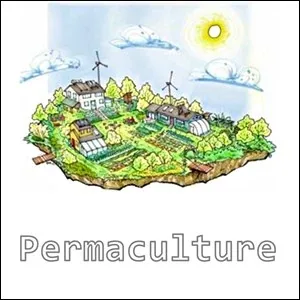
- MAKE AN OUTER-PERMACULTURE WEBINAR- EXPERIMENT PWHYRUSx.10- Make your webinar about sharing what other people know. Empower your people with other people's knowledge resources and connections. Ask for questions in one session and use these as the contents of your next session. - How to grow sprouts (archived — not captured) - How to start to grow your own planter or raised-bed garden.
- How to collect and save your own vegetable seeds for tomatoes, squash, beans, carrots, beets, onions, zucchini, etc.
- How to make compost.
- How to change your yard into a vegetable garden.
- How to re-localize EVERYTHING.
- How to organize a community in your neighborhood.
- How to create real value for your community.
- How to make your community into a resilient Village
- How to serve your village as an Edgeworker
- Etc.
This- EXPERIMENTis to use the necessity that comes out of promising to provide weekly valuable content through an online Outer-Permaculture course for you to learn how to deliver online courses, and also, for you to learn to re-localize your own authority with regards to the practical necessities of life.
 - MAKE AN- WHOLE-PERMACULTURE (archived — not captured)EXPLORATION WEBINAR- EXPERIMENT PWHYRUSx.11- Here is your chance to invite people along on a research adventure to explore people's flexibility and self-expression. Creating your online discovery space does not depend on you already knowing about - Whole Permaculture (archived — not captured)- It can help to have distilled your - Bright Principles- This - EXPERIMENTis to use the webinar project to take an- Whole Permaculture journey. The compost and seeds are already in people. By adding the sunshine of radiant attention and the rain of love, you all help each other come to life and produce fruits.- You can ask each other authentic questions and use the Bright Principles of each person and your group intelligence as inexhaustible resources for facing directly into what comes up for people. - HINT:Instead of taking on the purpose of making things better, or fixing things, or changing things, Inner Permaculture works best by taking on the purpose of Being with what is. Instead of trying to find solutions or healing processes, try to rest in intense awareness of what causes the thing in the first place. When you remain intensely aware of the inner causes that shape your world, the patterns lose their power over you and new options emerge in the same way a mirage melts away to reality.- Gathering in the name of Inner Permaculture turns out to be immensely productive and immensely Fun! - DISCOVER YOUR- POWER OF CHOICE- EXPERIMENT PWHYRUSx.12- Every day you are making myriads of choices, the sum-total of which create your day. - Many choices are about external things, such as choosing what you do, what you say, where you go, what you buy, what you wear, how to make your hair, what you eat, who you speak to, what comes next, what to plan for your time, etc. - However, you make many - morechoices each day about internal things.- This - EXPERIMENTis to become aware of and to notice the chances you have to- Conscious Choose- Unconsciously Choose- What to put your attention
- MAKE AN- WHOLE-PERMACULTURE (archived — not captured)EXPLORATION WEBINAR- EXPERIMENT PWHYRUSx.11- Here is your chance to invite people along on a research adventure to explore people's flexibility and self-expression. Creating your online discovery space does not depend on you already knowing about - Whole Permaculture (archived — not captured)- It can help to have distilled your - Bright Principles- This - EXPERIMENTis to use the webinar project to take an- Whole Permaculture journey. The compost and seeds are already in people. By adding the sunshine of radiant attention and the rain of love, you all help each other come to life and produce fruits.- You can ask each other authentic questions and use the Bright Principles of each person and your group intelligence as inexhaustible resources for facing directly into what comes up for people. - HINT:Instead of taking on the purpose of making things better, or fixing things, or changing things, Inner Permaculture works best by taking on the purpose of Being with what is. Instead of trying to find solutions or healing processes, try to rest in intense awareness of what causes the thing in the first place. When you remain intensely aware of the inner causes that shape your world, the patterns lose their power over you and new options emerge in the same way a mirage melts away to reality.- Gathering in the name of Inner Permaculture turns out to be immensely productive and immensely Fun! - DISCOVER YOUR- POWER OF CHOICE- EXPERIMENT PWHYRUSx.12- Every day you are making myriads of choices, the sum-total of which create your day. - Many choices are about external things, such as choosing what you do, what you say, where you go, what you buy, what you wear, how to make your hair, what you eat, who you speak to, what comes next, what to plan for your time, etc. - However, you make many - morechoices each day about internal things.- This - EXPERIMENTis to become aware of and to notice the chances you have to- Conscious Choose- Unconsciously Choose- What to put your attention - How much importance to give to something.
- What story to attach or not attach to an event or a circumstance.
- Who to listen to and what quality of listening to give them.
- Who to flow power to.
- Who to ignore.
- What to care about.
- How much status to grant someone.
- Where to flow your sexual energies.
- Whether or not to follow customs, rules, or traditions.
- How far to go with allowing Yourself (not your psychology or your hidden irresponsible drives... but You, your initiated adult Being) to do what it wants.
- Which projects or people to align yourself with, which to avoid.
- Which purpose
- What practices
- Which energetic tools
- What to direct your conscious will
- What actions to take with the information and energy you receive from your FeelingsEmotions
- How to discern and implement instructions from your Archetypal Lineage
- What to value with your time, attention, money, support.
- Who to refer to whom, who to connect with whom in the village or in the global meshwork you are weaving.
- Etc. Each day this week, consciously choose about three of your inner options, and write the three conscious choices you made down in your- Beep! Bookunder the title:- CONSCIOUS CHOICES. - WRITE THE BOOK- Nobody can write the book for you. - Have you ever received anything of value from another author? - Guess what... - it's payback time!- You can't write? Duh! That's because you went to school! - Time to - quit school- Life is short. Do the things that matter most. Have as much Fun as you can. - WRITE THE SCRIPT- Did you ever watch a movie after which you became a different person? New dimensions of possibility slipped into your worldview almost without effort? You reclaimed hidden beneficial talents? Connected to archetypal qualities? - Movies - like books - have - matrix-building- There are so many movies that have not been made. - And before a movie can be made, the script must first be written. - Write the movie script for the movie you always wanted to see. - Write the movie script that will inspire and change your own life. - In the most basic terms, - a screenplay- formatted scriptpage in Courier font equals roughly one minute of screen time.- When you have written your film script, write to me (clinton@nextculture.org) and I can suggest some next steps. - 1 2 3 Go! - FURTHER AREAS FOR EXPERIMENTING- attention/centering experiments- videos with distinctions, instead of written material- what to do particular if you have children and you are in a city- Power of the unknown/using the gap in knowing-Make sections, like: relationships, handling feelings, calling empowerment, spaceholding empowerment, Next Culture creative Hub, Youth Initiations, etc.-To build section of specialization (if trainers do specialize in any of these) and also for people which will come, so they can go directly to the section they look for!-Create teams of Trainers interested in similar topics.
- Corona Virus Fear - an experiment- EXPERIMENT PWHYRUSx.13- Let’s get to the bottom of this, shall we? What are those sensations coursing up and down your spine when you hear the words ‘Corona Virus’? That tightness around your heart? Shallow breaths, survival-instinct alertness, ready to leap away, or fight, or powerlessly panic? - Yes. It is fear. Deep fear. High intensity fear. Your fear. - What is that fear actually about? What are you truly afraid of? What do you imagine will happen to you if you get infected with Corona Virus? - You don’t know? - That is because your - Numbness Baris so high.- You were trained to feel afraid of your fear, so you cut fear off at its source by raising your Numbness Bar to its maximal level. - This may not be as smart as you think. Your fear is not an accident. It is not there for no reason. Your fear has intelligence from all the years of your life to inform you about dangers. Your fear has energy to get you to safety. - Let’s do an experiment to find out what your Corona Virus Fear is actually about. Doing this experiment is simple. It starts by gently lowering your Numbness Bar. - Lower your Numbness Bar down so you start to notice the experience of 10% intense fear, 6% intense fear, even 3% intense fear coming directly from the source of the fear. There is a lot of fear in you, fear about so many things. You have wasted so much fear-intelligence for so many years of your life. - Let yourself feel afraid right now. You don’t have to scream about it. Simply allow it to get big enough to talk with. Say, “ - Hello Fear. What do you have for me?”- Then listen. Get out your - Beep! Book- Write: CORONA VIRUS CREATES IN ME THE FEARS OF: - Fear of fever aches? The sweating? The shivering?
- Fear of headaches? The overall pain and lack of energy?
- Fear of being immobilized? Being stuck in bed?
- Fear of being identified as a sick person? A weakling?
- Fear of being separated out? Being quarantined?
- Fear of needing to be taken care of? Being a burden on others?
- Fear of not being able to get out and move around?
- Fear of not being allowed to be with my friends?
- Fear of being alone?
- Is that all? Is that your real Corona Virus Fear? - Or is there something else? Something bigger? Something unmentionable… your fear of dying? - Let us continue this experiment. - What is your fear of dying actually about? Keep writing. Use your own words and ideas. - Write: THE THOUGHT OF DYING CREATES IN ME THE FEARS OF: - Fear of not knowing what happens after I die?
- Fear of being appreciated in heaven?
- Fear of being sent to hell?
- Fear of facing a reconciliation without secrets?
- Fear of being seen absolutely to my core?
- Fear of being caught?
- Fear of utter nothingness? The darkness? The silence?
- Fear of not being in charge anymore?
- Fear of being out of control?
- Fear of not being finished with life?
- Fear of not having lived enough?
- Fear of missing out on things?
- Fear of never getting another opportunity to try things?
- Fear of missing the hearts and glances of my friends?
- Fear of losing chances?
- Chances for what? What is not complete for you right now? Keep writing. Be clear and specific about what have not yet lived enough of. What are you missing right now? - Write: IT IS NOT OKAY FOR ME TO DIE NOW BECAUSE: - I did not see enough sunrises.
- I did not risk being totally vulnerable
- I did not take enough masks off to be fully seen.
- I have not experienced love deeply enough.
- I have not walked through enough of the world.
- I did not let myself feel enough of the awe of nature.
- I did not truly ask the important unanswerable questions.
- I have not risked enough trying out new things.
- I did not break away enough from other people’s expectations.
- I have not said, “No!” enough… or “Yes!” enough.
- I did not make enough efforts to go beyond my habits and unfold my potentials.
- I did not discover who I really am and what my life is really about.
- I did not stop enough to notice what happens in those gaps between moments.
- I have not gone to the edge of the known and camped out there for a while.
- Whatever you thought and wrote, whatever you realized while thinking about these questions, whatever your Corona Virus Death-Fear caused you to notice during the past few moments… has wisdom in it. Your own wisdom about your own life. What are you going to do about it? - When Corona Virus threatens to kill you or your loved ones (even your unmet loved ones…) it functions like an X-Ray on the current quality of your life. - Your Corona Virus Fear-of-Dying Life-Inspection X-Ray reveals your soul-illnesses, what your spirit lacks, the longings of your calling, your still-veiled amazement potentials, your as-yet unfulfilled destiny, your unopened invitations to play full out. - Getting to look at an X-Ray of your life is worth a lot. The fresh perspective may be shocking. It may make you terribly sad about the choices you previously made and the opportunities you have missed. Feel that pain. Grieve it. Let it wake you up. - Since you are reading this, you are not dead yet. You still have a chance. - Your Corona Virus Fear-of-Death Life-Inspection X-Ray is a near-life experience. You get to face into an old decision with a new kind of determination, a new level of clarity: Those things that your life is missing… those things you actually want and don’t want – those aliveness-nutrients you avoided until now… Which is bigger? Your fear of continuing to miss out on them? Or your fear of doing them? - Fear is fear. If you survive the Corona Virus pandemic, your fears are not going to go away. - Sure, when it is over you could raise your Numbness Bar back to a high level of numbness again, but your body will still intelligently generate fear for you. - If fear does not go away, and you decide to go for the things the Corona Virus Fear-of-Death Life-Inspection X-Ray showed you that your life is missing, you might have to do those things afraid. - Just go ahead and do them! Why not? - As your unquestionable imperatives dissolve, as your plans and self-imposed expectations to keep busy and productive become impossible to fulfill, you are left with space. It is not common knowledge, but having a space of nothingness at your core is exceptionally precious. That unfillable emptiness is not a mistake, not a design-error from God. - That emptiness at your center is where new stuff comes from. Try this: Whenever you are faced with an unanswerable question, an unknown challenge, reach deeply into the scary emptiness inside of you with your intention and grab onto something, anything. Pull it out. Voila! If what you pulled out is not a workable solution for your present needs, store it on a mental shelf for later use, and reach back into the inner void to pull out the next thing. - What is in your inner void? Nothing! What is possible in your inner void? Everything! This endless resource is within you wherever you are. You can grow accustomed to sensing your inner void ongoingly. This will make you more present, authentic, and spontaneously creative in your relations. - Yes, it can be scary to change your self-image so that you can look in the eyes of another person knowing that you have a void of nothingness and not-knowing at your core. But as the Corona Virus has taught you, fear is fear. Taking fear as your ally reveals many hidden treasures. There is so much to explore.
- Interconnected PM Services- Webinars, Online Singles and Couples Coaching, Videos, Online Possibility Team, Online Rage Club, Online 3-3-3 Process, Online Study Group, and more, all using the distinctions, tools, thoughtmaps, and transformational processes of - Possibility Management
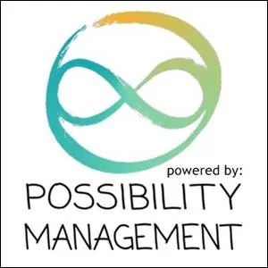

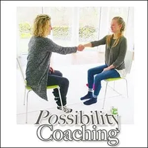
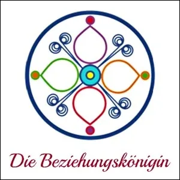


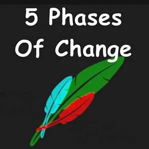


 - NOTE:This website is a- Bubble in the Bubble Map- StartOver.xyz- doorway- experiments- upgrade your thoughtware- point of origin- create- possibility- knowledge- about. Your- thoughtware- with. When you- change your thoughtware- liquid state- reorganizes- feelings- emotions- upgrading your thoughtware- build matrix- consciousness (archived — not captured)- low drama- reactivity- collectively build- responsibly- PWHYRUSx.00to log your Matrix Point for reading this website on- StartOver.xyz
- NOTE:This website is a- Bubble in the Bubble Map- StartOver.xyz- doorway- experiments- upgrade your thoughtware- point of origin- create- possibility- knowledge- about. Your- thoughtware- with. When you- change your thoughtware- liquid state- reorganizes- feelings- emotions- upgrading your thoughtware- build matrix- consciousness (archived — not captured)- low drama- reactivity- collectively build- responsibly- PWHYRUSx.00to log your Matrix Point for reading this website on- StartOver.xyz